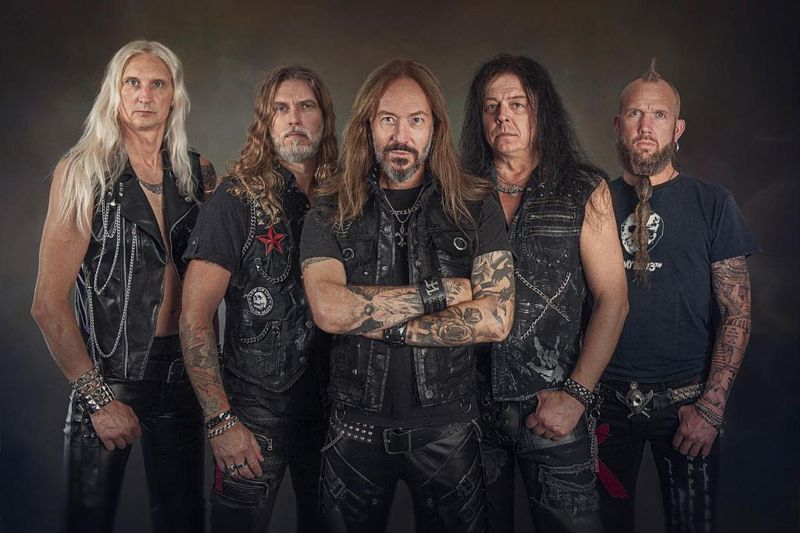
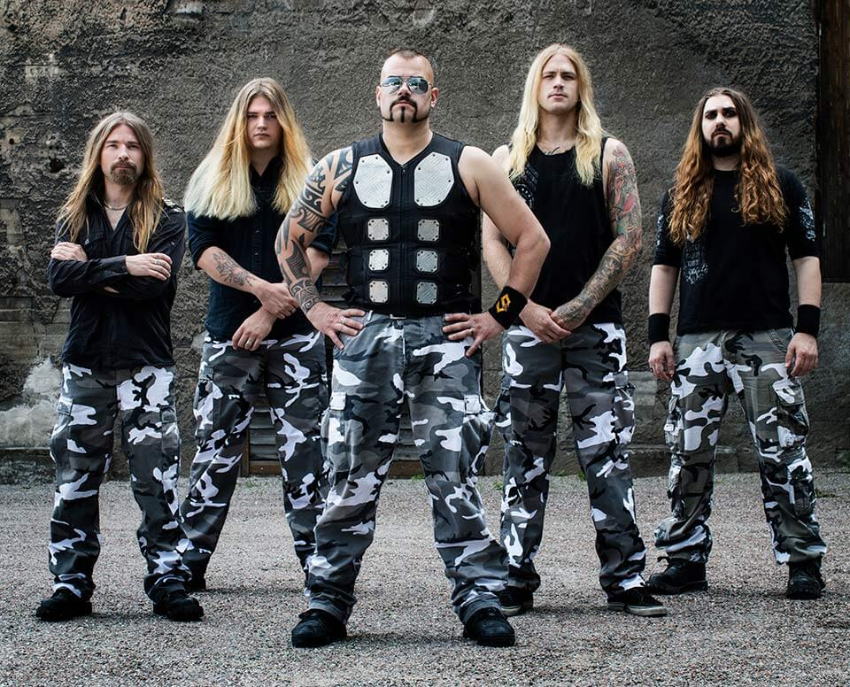
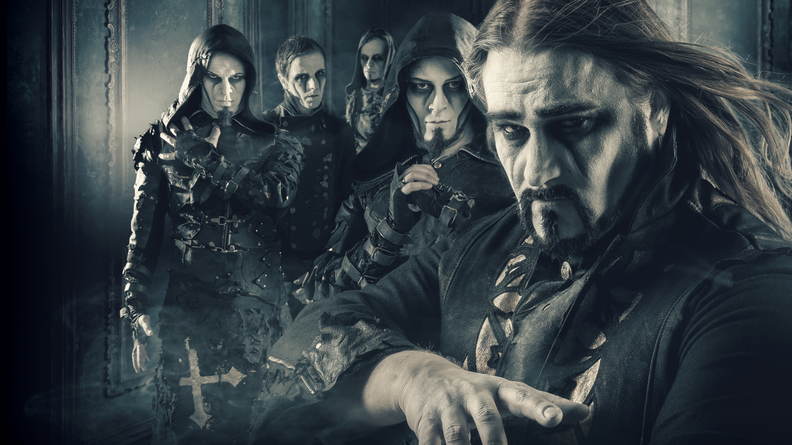
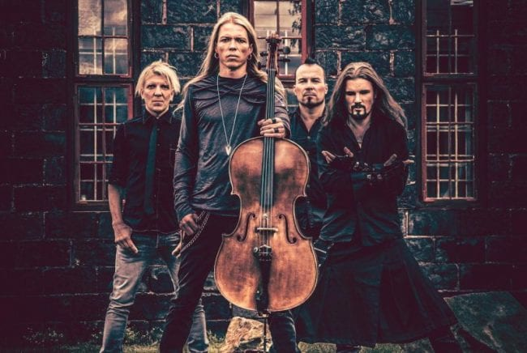

HammerFall
HammerFall is a Swedish heavy metal band from Gothenburg. The band was formed in 1993 by ex-Ceremonial Oath guitarist Oscar Dronjak.
Early days (1993-1996)
HammerFall was formed when rhythm guitarist Oscar Dronjak quit Ceremonial Oath and invited Jesper Strömblad (from Ceremonial Oath and In Flames) to join him as a drummer in a new musical project he had been contemplating for some time. Dronjak had already composed the song "Steel Meets Steel," which was later included on HammerFall's debut album. Dronjak and Strömblad were later joined by lead guitarist Niklas Sundin, bassist Johan Larsson, and vocalist Mikael Stanne. When Niklas Sundin and Johan Larsson left HammerFall the following year, Glenn Ljungström (then guitarist of In Flames) and Fredrik Larsson (bassist of the former Swedish death metal band Dispatched), replaced them.
All five members played in other bands at the time. Dronjak and Larsson played in Crystal Age; Strömblad and Ljungström played in In Flames and Stanne sang for Dark Tranquillity. Both of these bands influenced Swedish melodic death metal. HammerFall was relegated to being a side project of them all for several years. Their concerts were limited mostly to a local music contest named Rockslaget. The band had few songs of their own and played mostly covers from bands such as Pretty Maids, Judas Priest and Alice Cooper. In 1996, HammerFall reached the semi-finals of Rockslaget. When Mikael Stanne could not perform with the band in the semi-finals, they found Joacim Cans, who agreed to play with them for the night. The concert was a success although the judges disqualified HammerFall for the finals. By the end of that day, Joacim had already been made an official member of the band.
Biography
No matter how much everything changes in culture and the world at a large, heavy metal endures. It empowers. It engages. It engenders strength and it outlasts fads. The same can be said for HAMMERFALL. Since forming in Gothenburg, Sweden during 1993, the now quintet of Oscar Dronjak [guitar], Joacim Cans [vocals], Fredrik Larsson [bass], Pontus Norgen [guitar], and David Wallin [drums] have weathered the many storms of changing trends within the music world to stand tall as pioneers that continue to wave the flag of Heavy Metal.
This message rings out louder than ever for HammerFall in 2022. The group’s impact can be felt in nearly every corner of heavy music. Among many accolades, Rock Hard touted the 1997 debut, Glory to the Brave, in its book The 500 Greatest Rock & Metal Albums of All Time. 2000’s Renegade bowed at #1 in their home country and went gold. In 2002, Crimson Thunder yielded the seminal “Hearts On Fire.” With 51 million Spotify streams to date, the song notably became a theme for the Swedish Olympic Women’s Curling Team, which led to the band performing the opening ceremony at the European Athletics Championships in front of a global audience of 250 million. In addition to playing everywhere from India to Australia, the group has shared the stage with everyone from Iron Maiden and Rammstein to Dio. 2014 saw (r)Evolution bow at #1 on the Billboard Heatseekers chart in addition to topping charts back home. During the soon thirty-year career, the Swedish titans have topped album charts both in their home country as well as internationally, sold out tours, reached Gold status and have accumulated 240 million Spotify streams and over 130 million YouTube views.
In true HAMMERFALL fashion, their last studio album, Dominion, received widespread praise from the fans, their peers and the industry. The riffs hit harder, the rhythms thundered louder and the choruses soared higher than ever. This was classic HAMMERFALL but turned up to eleven. “In a lot of ways, this album is classic HAMMERFALL,” exclaims Oscar. “We didn’t set out to make a sequel to a previous album. Instead, it’s a mix of the strengths from all of our records and everything that has led us to this point. You’ll continue to be surprised the more you listen; it’s something I’m very happy with.” Dominion went on to generation the success that it so much deserved. Reaching number #2 on the official charts in Sweden, only held off the top spot by the counties biggest local artists, the album also found itself of many “albums of the year” lists, saw the band undertake hugely success tours in Europe and the USA and even earned the band yet another Grammy Nomination in their homeland. Undenounced to themselves, HAMMERFALL were in fact bigger and dare we say, better, then they ever had been before.
Along with everyone else in the world, HAMMERFALL as a band and individuals faced the same challenged that a global pandemic forces on everyone. Their tour and album cycle prematurely come to a sudden halt and they were of course forced into lockdown. Faced with the uncertainty of what the near future help and the band finding themselves off the road for what turned out to be their longest ever stretch since there inception, Oscar started the writing process that would in time become the bands twelfth studio album.
Fast forward to the summer of 2021 and the band walked back into Black Studios in Gothenburg, their trusted own studio, their home away from home and the birthplace of the last few HAMMERFALL albums. The old saying of “One Brings Out Their Best When Faced With Adversity”, rang so very true for the guys during the writing process of what would ultimately become Hammer Of Dawn. With the world in chaos, the band bonded even tighter than before and delivered what many early listeners are predicting as the best metal album of 2022 and a high point of the band’s catalogue. Set for release on February 25th, 2022, Hammer Of Dawn, is monstrous slab of HAMMERFALL in its purest form. Opener “Brotherhood”, echoing the deep friendship felt between Joacim and Oscar after all these years also serving as a shout-out to their loyal Templars and the unity between band and fan. Title track “Hammer Of Dawn” is everything that is GREAT with HAMMERFALL all in one song. Soaring vocals, catchy riffs, killer solo, anthemic chorus, this will unquestionable become a live favorite from this day forth The title track, "Hammer of Dawn,” is also accompanied by the album's first music video, filmed at Liseberg amusement park in Gothenburg by friend and famed director Patric Ullaeus.
Sabaton
Sabaton is a Swedish power metal band from Falun. The vast majority of their albums are written about historical events, mainly wars and significant battles. Their songs even include songs about personal struggles such as divorce and cancer. Their 9th album, The Great War (2019), reached number 1 on Swedish and German music charts. Sabaton has been referred to as one of the "big four" power metal bands, along with Helloween, Blind Guardian and DragonForce. They are one of the most successful rock bands in Swedish history, with their album Carolus Rex being the best-selling Swedish heavy metal album of all time.
Formation and first albums (1999-2009)
Sabaton was formed in December 1999. After the first songs were recorded in Peter Tägtgren's studio, The Abyss, Sabaton was contacted by a couple of record labels. The band signed with the Italian label Underground Symphony, which then released, internationally, the promo CD Fist for Fight. The disc, distilled from two demo tapes recorded between 1999 and 2000, was intended to promote forthcoming Sabaton releases. In 2002, a new album, Metalizer was recorded and was supposed to be distributed by Underground Symphony as the band's debut album. After two years of waiting, during which the band held various performances across Sweden, the album was abandoned.
The band returned for a second album titled Primo Victoria. Brodén stated that album's title track "kicked off" the band's historical theme. Sundström stated that the band decided to focus primarily on historical themes in their lyrics after he and Brodén watched the film Saving Private Ryan. Sabaton signed with Black Lodge, the metal division of the Sound Pollution record label. In early 2005, keyboardist Daniel Myhr was recruited in order to relieve Joakim Brodén of his keyboard duties. In early 2006, Sabaton toured in support of Edguy and DragonForce. The band's third album, Attero Dominatus, was released in Europe on 28 July 2006. In March 2007, Sabaton released Metalizer as a double disc together with Fist for Fight, along with the previously unreleased song "Birds of War".
As a follow-up to Metalizer, in May 2008, Sabaton released its fourth album The Art of War, an album inspired by the influential book by Sun Tzu. The decision to base the album upon Sun Tzu's book came from the idea that in the 2000 years since the book was written, the human race has achieved many things, but, apart from weapon advancements, operational art, and strategy, war itself has remained basically the same.[citation needed] The album contains the singles "Cliffs of Gallipoli" and "Ghost Division". They toured Europe in 2009 as an opening act on the HammerFall Tour. After their Bloodstock performance, the band again went on tour with DragonForce, towards the end of 2009, for eighteen shows in the UK.
Lyrical and musical style
The band's main lyrical themes are based on war, historical battles, and acts of heroism[41]—the name is a reference to a sabaton, knight's foot armor. The armor and battle theme is heard in most songs in almost every album except Metalizer. In their album, The Great War, which was released on 19 July 2019, all the songs were based on World War I. Lyrical content drawn from World War I, World War II and other historical conflicts is prevalent and lyrics often recite stories of heroic deeds by men, women, and armies, such as the song "White Death", for example, which was made in honor of legendary Finnish sniper Simo Häyhä.[42][43] Sabaton is often referred to as a power metal band by both music critics and the general public - however, the band has traditionally rejected the term and they consider themselves a unique form of heavy metal. Bassist Pär Sundström said in an interview: "I don't think Sabaton can only be categorized as power metal, as the two main attributes of power metal are high pitched vocals and fantasy lyrics and Sabaton have neither of those. We simply play our version of heavy metal—what heavy metal is to us. I'm sure that has impacted our reach, in addition to the fact that we don't give up after only a few tries! That, and Sabaton's music appeals to people of all ages."
Band
In over two decades since their launch, Swedish metallers Sabaton have carved out a reputation as one of the hardest working bands in the business - gaining a legion of loyal fans across the globe, delivering ten highly-rated studio albums (including two certified platinum-sellers), and scoring multiple industry award wins and nominations… not to mention launching their own annual festival and cruise.
Combining soaring power riffs with vocalist Joakim Brodén’s instantly-recognisable gruff baritone, the band refuses to be simply slotted into a genre. Fans need only know them as Sabaton: the heavy metal band that sings of real life wars and the people who played a part in them – of gruelling campaigns and dazzling acts of bravery, of magnificent victories and touching personal struggles – true stories more fantastic than any fiction.
Sabaton are perhaps best known for their electrifying live concerts, combining accomplished musical performances and a finely-crafted stage show – including their full-sized tank drum-riser – with energy and laughter. The band has headlined as far afield as North America, Australia and Japan, and regularly fills arenas and takes top-billed slots at festivals across Europe.
Fresh from a long bout of touring, the band is looking forward to a number of festival appearances this summer before returning to the studio to work on their next project.
Powerwolf
Powerwolf, often stylized as POWERWOLF, is a German power metal band founded in 2003 in Saarbrücken by members of Red Aim. The band consists of vocalist Karsten Brill as "Attila Dorn", lead guitarist Benjamin Buss as "Matthew Greywolf", bassist/rhythm guitarist David Vogt as "Charles Greywolf", keyboardist Christian Jost as "Falk Maria Schlegel" and drummer Roel van Helden. The group uses dark themes and images, contrary to traditional power metal music, as well as corpse paint, gothic-tinged compositions and songs about werewolf and vampire legends.
They released their debut album, Return in Bloodred, in 2005. Their second album, Lupus Dei, was released in 2007. The band entered the official German charts for the first time in 2009 with their third album, Bible of the Beast. Shortly after its release, their first drummer Stefan Gemballa (stage name Stéfane Funèbre) left the band. He was replaced by Tom Diener, who was replaced in 2011 by Roel van Helden. In the same year, the band released their fourth album, Blood of the Saints. In 2012, Powerwolf signed with Napalm Records and released Preachers of the Night in 2013. It has debuted at No. 1 in Germany. Their sixth album, Blessed & Possessed, released in 2015, was certified gold in the Czech Republic. Their seventh album, The Sacrament of Sin, was released in 2018. Their eighth album, Call of the Wild, was released in 2021.
Powerwolf has embarked on several tours, with a majority of their tour dates taking place inside of Europe. They also change their costumes for every album. Over the years, a theme has developed which personifies the band members as werewolves, leading fans to refer to the band affectionately as "The Wolves".
Formation and first albums (2003-2009)
Powerwolf was formed in 2003 by the members of the stoner rock band Red Aim. When the band was founded, the members decided to take on pseudonyms and build up backstories around those.
Officially, the brothers Charles and Matthew Greywolf had been playing together for years when they decided to create a band, and so Powerwolf was started. Soon the brothers added German drummer Stéfane Funèbre and German keyboardist Falk Maria Schlegel to the band, but could not find a suitable singer to complete the line-up. In the meantime, the band started writing, and on holidays in Romania, Charles and Matthew met Attila Dorn in a pub in Sighișoara and invited him to join their band. Dorn, a student of classical opera at the National University of Music in Bucharest, moved to the band's hometown Saarbrücken, and became the frontman of Powerwolf. With Dorn's love of Romanian werewolf legends, the band created their debut album, Return in Bloodred, which used these same legends as the basis for many of the lyrics. After the album's release, Powerwolf went on their first tour titled Europe in Bloodred Tour.
n 2007, they followed up with their second album, Lupus Dei, a concept album starring a wolf as the main character and his rise from bloodlust to enlightenment. Powerwolf supported Grave Digger during their tour.
In 2008, Powerwolf released their first video album The Wacken Worship. It contained live footage of their show at Wacken Open Air 2008. In the same year, they went on a Metal is our Mission Tour together with Brainstorm and Pagan's Mind.
The single "Raise Your Fist, Evangelist" was released on 19 March 2009. Powerwolf's third album Bible of the Beast was released on 24 April 2009. The record was able to place as the band's first album in the German charts and reached number 76. They embarked on a tour supporting the album in 2010. "Raise Your Fist, Evangelist" was nominated for the Metal Hammer "Metal Anthem 2010" award.
The History of Powerwolf
POWERWOLF - a name that fills every disciple of melodic heavy metal with joy and stands for a successful quintet that needs no more introduction after 15 years of steep ascent. The anniversary was celebrated with a best-of release in 2020, which united the highlights of all six studio albums released to date - including both long-running hits from early works, and more recent hits from the gold-awarded records Blessed & Possessed and The Sacrament Of Sin, such as the platinum hit single “Demons Are A Girl's Best Friend”. Now, only about 12 months later, arguably the most successful pack of the contemporary German metal fauna is ready with bared fangs for the next bloody foray.
The aptly titled Call Of The Wild, which was once again crafted by the venerable production duo of Jens Bogren and Joost van den Broek at Swedish Fascination Street Studios, will be unleashed in July 2021! A new chapter in the band's history will be opened, serving up beloved classic trademarks to long time and newly recruited POWERWOLF devotees alike. Call Of The Wild is surprising and delighting at every stage of this wild 11-track ride, with stylistic advancements on an unprecedented scale! “Faster Than The Flame” - an opening blast that ignites the bonfire in purest POWERWOLF manner as a fiery distillation of such fulminant album openers as “Amen & Attack” or “Fire & Forgive” - bears the distinctive signature of the creative minds around main songwriter Matthew Greywolf even in the first chords, and impressively demonstrates that the five-piece has undoubtedly succeeded in creating its very own, unmistakable sound over the course of the last one and a half decades.
From this bomb-proof base, the wolves subsequently dare to take the stage with tracks like the outrageously catchy “Dancing With The Dead” (a future classic on every decent headbanger party playlist!), the wonderfully heretical “Glaubenskraft” and Attila Dorn's epic-emotional magic moment on “Alive Or Undead” - a power ballad on the highest level that finally cements the reputation of the frontman as an absolute exceptional bard!
POWERWOLF enters new musical territory every minute, conquering it for themselves in almost the same second and turning it into one big firework of fresh influences. Lyrically - aside from the usual tongue-in-cheek heresy à la “Undress To Confess” - Call Of The Wild is the hour of mythical scary characters, who would all have good cards in the fight for the rank of official band mascot: While “Beast Of Gévaudan” tells the story of a legendary predator that spread fear and terror in southern France in the middle of the 18th century at top speed, the stomping “Varcolac” pays homage to the eponymous wolfish demon of Romanian folklore, before “Blood For Blood (Faoladh)” evokes the Irish relative of the moon worshiper known to us as "Werewolf" in front of a fitting sound backdrop. Finally, the final offering “Reverent Of Rats” puts a pompous exclamation mark behind a work that can rightfully be called the most multi-faceted in the band's history so far and which - beyond all promotional platitudes - is a hot contender for the top position among this year's metal releases!
Apocalyptica
Apocalyptica is a Finnish symphonic metal band from Helsinki, formed in 1993. The band is composed of classically trained cellists Eicca Toppinen, Paavo Lötjönen, and Perttu Kivilaakso, and jazz drummer Mikko Sirén. Originally a classical-style Metallica tribute band, the band eventually adopted a neoclassical metal style without the use of conventional guitars and bass. They have sold over four million albums to date.
History
A cello quartet, Eicca Toppinen, Paavo Lötjönen, Max Lilja, and Antero Manninen formed Apocalyptica in 1993 at Sibelius Academy in Helsinki, Finland. The band released their debut studio album, Plays Metallica by Four Cellos, in 1996. The album consisted of only eight Metallica covers (mostly from Master of Puppets and their self-titled The Black Album). The band was featured on two songs on the Waltari album Space Avenue in 1997. Apocalyptica released their second studio album, Inquisition Symphony, produced by Hiili Hiilesmaa in 1998. Inquisition Symphony contained covers of Metallica and other metal bands such as Faith No More, Sepultura, and Pantera. It also contained three original songs by Eicca Toppinen.
Antero Manninen left the group in 1999 and was replaced by Perttu Kivilaakso. Perttu had previously performed with the band in 1995. Apocalyptica released their third studio album, Cult, in 2000. It featured mostly original songs and three cover songs. The first Apocalyptica track to include vocals, "Path Vol. 2", sung by Sandra Nasic of Guano Apes, was released shortly after Cult. Max Lilja left the group in 2002 and joined Hevein.
Biography
"Cell-0 represents the core of everything. For us it is a particle that symbolizes the essence of all. That is to say, where everything comes from and where everything ends up…" -Eicca Toppinen - Apocalyptica (cellist and founding member)
Apocalyptica are true explorers, always seeking new frontiers and uncharted territories in which to express themselves. With Cell-0, their 9th studio album, the ambitious and electric quartet have not simply returned to their non-vocal roots, they have traveled deeper and further into the universe of instrumental music than ever before. That first love and passion which fueled Apocalyptica to form during 1993 in Helsinki now carries richer layers of knowledge and experience, which in turn have led to the band to a fundamental realization and creative path.
"We wanted to challenge ourselves to find further flavours in the cello itself," says cellist Perttu Kivilaakso "had we found them all? Had we explored every corner to find them?"
"We went about creating Cell-0 as a full piece of art and not thinking about singles or ‘the timing of singles’ or anything like that," continues Eicca "it’s challenging to get all the details and colours right and still have the energy of being a real metal cello band." continues Eicca, who like Perttu and fellow cellist Paavo Lötjönen graduated from the Sibelius Academy in Helsinki "So that was the main goal for us when doing this album, to have those two very different worlds connecting to each other in a stronger, more explorative way than ever before."
The genesis for Cell-0’s creation arrived as Apocalyptica were busy revisiting their initial breakthrough turf on tour. During 2018’s 20th anniversary tour celebrating their genre-breaking debut album Apocalyptica Plays Metallica By Four Cellos, the importance and potential of their roots started to take on deeper proportions.
"We found that these concentrated instrumental events helped us to find ourselves better than on other albums," explains Perttu, "this ‘real’ connection between the cello and the audience was renewed, and made us want to both self-produce and lure ourselves to find the real core of why we began and why we started. I think it is braver and more progressive in terms of the writing."
As the band began their journey at Sonic Pump Studios in Helsinki, it was clear that such discoveries were not going to come easily. Yet afforded the freedom to explore and create without the constraints of format or schedule, Apocalyptica were invigorated by the process.
"On Cell-0 you can clearly hear that we did not take the easiest path," chuckles Eicca, "when we might’ve thought something was good, we’d then say it wasn’t great, kick it out and work at it again. And that’s been the tool for us to develop the songwriting, the arrangement, the production, every aspect of making this album. It’s a hard process to be in the studio for a couple of months and keep on challenging yourselves every day for twelve hours a day, but that stamina is something you learn in your career. Some bands get lazy and just release albums that don’t bring anything new to the table, that’s not our way of working."
In pushing themselves to find other places and levels in their music, Apocalyptica opened up to some seemingly unorthodox methods and emotions to travel through the creative process. The result is an album which engages the listener in a myriad of feelings and emotions ranging from the raging thrash of ‘En Route To Mayhem’ to the ethereal shroud of ‘Ashes Of The Modern World’ and the cinematic scope of ‘Call My Name’, something the band were hoping would happen.
"It is tough to express without lyrics, but in Cell-0 we found particles of our universe previously unknown to us." explains Perttu "Millions of notes combine to create music just as millions of cells combine to create life, and when you visualize the whole thing, similar patterns appear. When you look at symphonic sheet music, it looks similar to starry skies, and when I look up at the sky and see the stars, I also see them as potential notes. There are people suffering, and people not treating our planet properly, so there is anxiety at the state of the world. Many of the songs on Cell-0 refer to the blindness and greed of humanity and what we should be doing. We discussed during the writing that this was a very important series of emotions and observations to express, especially with regards to ignorance. I started to believe that human ignorance should be treated as a deadly sin, as it is behind so much of the bad stuff currently around us."
"Writing music, at least for me, is about filtering experiences through your personality," furthers Eicca, who found himself listening to old favourites like Shostakovich, Prokofiev and Gojira in and around the time of co-creating Cell-0. "I start to play something, develop it and then just transfer my own emotions into the music. It varies a lot depending on the mood. These songs have so many layers, and are so complex, it’s not always easy to point out exactly what they are about. But I think that’s also the beauty of instrumental music, that the listener always can feel free to experience the same songs in very, very different ways. It’s also one reason why we don’t want to explain the songs before they’re experienced."
Apocalyptica are: Eicca Toppinen, Perttu Kivilaakso, Paavo Lötjönen and Mikko Sirén.
Beast in Black
Beast in Black is a Finnish-Greek-Hungarian heavy metal band that was founded in 2015 in Helsinki by guitarist and songwriter Anton Kabanen. The musical influences of the band include Judas Priest, Manowar, W.A.S.P., Accept and Black Sabbath.
History
Anton Kabanen founded the band in 2015 after he left his former band Battle Beast earlier in the same year. Like Battle Beast, the band's name is a tribute to the Japanese manga and anime series Berserk.
 Beast in Black signed with the Nuclear Blast label and released the first album, Berserker in November 3, 2017, which received a very positive response worldwide. The debut album ranked seventh on Finnish charts albums. In addition, Berserker also charted in Germany, United Kingdom, Sweden, Switzerland and France.
Beast in Black signed with the Nuclear Blast label and released the first album, Berserker in November 3, 2017, which received a very positive response worldwide. The debut album ranked seventh on Finnish charts albums. In addition, Berserker also charted in Germany, United Kingdom, Sweden, Switzerland and France.
On February 7, 2018 it was announced that Atte Palokangas will replace Sami Hänninen as the permanent drummer. The band includes the Greek vocalist Yannis Papadopoulos (ex-Wardrum), the Hungarian bassist Mate Molnar (Wisdom) and Kasperi Heikkinen (former guitarist of bands as U.D.O., Amberian Dawn etc.).
On March 21, 2018, it was announced that Beast in Black would be opening for Nightwish on the European leg of their Decades: World Tour.
The band's second album, From Hell with Love, was released on February 8, 2019. After the release of the album, the band did their first headline tour in Europe with the Finnish industrial metal band Turmion Kätilöt as support.
On October 26, 2021, Beast in Black released its third album, Dark Connection. In addition to Berserk, several songs in the album reference science fiction series such as Blade Runner and Battle Angel Alita. The album charted in Finland, Sweden, Switzerland, the United States, United Kingdom, Germany and Japan, ranking first in Finland.
Biography
2021 is a rather grim year for mankind: people not being allowed to meet, having to keep distance and only being able to stay in touch online, but there’s always been a glimpse of hope - at least for fans of powerful heavy metal anthems. At a small place called Sound Quest Studio, international heavy metal quintet BEAST IN BLACK - Anton Kabanen (guitarist and band founder), Yannis Papadopoulos (vocals), Kasperi Heikkinen (guitars), Mate Molnar (bass) and Atte Palokangas (drums) - have moved even closer together to complete the ominous third chapter of their BEAST-like musical trilogy, that comprises all chapters of Kabanen’s musical path - fittingly titled »Dark Connection«.
THE PAST...
After the superb success of their first two records - their debut »Berserker« (2017) and its follow up »From Hell With Love« (2019), both platinum-certified in Finland, and the latter of the two also hitting the top 10 of the German album chart - sharp riffs and hyper-catchy choruses are still the dominating elements of the group’s sound. Elements that have allowed the band to cultivate battalions of listeners all over the world. BEAST IN BLACK kick-started their live career with a couple of tours alongside well-known acts such as RHAPSODY, as well as a notable European arena run with symphonic metal masters NIGHTWISH that paved the way to their very own, mostly sold-out headline gigs. A memorable concert in front of 4,500 enthusiastic metalheads from all over the globe at Helsinki’s Ice Hall in December 2019 built the grand finale of their »From Hell With Love« touring cycle - just 10 months after performing for an 'only' 1,500 person strong audience in the same city! But that’s enough words for now about the quintet’s still young history...
THE PRESENT...
Produced, recorded and mixed by Anton Kabanen himself as well as mastered by Emil Pohjalainen (Amethyst Sound Productions), »Dark Connection« may feature the most prominent synths of all of BEAST IN BLACK’s recordings so far, especially in the form of the Italo disco, Eurobeat and symphonic elements that the band are so widely loved for. Despite that, at its core it’s still all about simple heavy metal.
The kind of ageless melodies that Kabanen has always been able to create once again melt with heroic stories that are rooted in sci-fi, fantasy and cyberpunk, that are represented in the artwork of the band’s long-time companion Roman Ismailov.
But could there really be a BEAST IN BLACK album without »Berserk«? Of course not, and there will never be. »Berserk« is one of, if not the, guitarist’s favourite manga series which the band once again pays tribute to on the new album in the form of 'Dark New World', 'To The Last Drop Of Blood' and 'Broken Survivors'.
Whether it’s rapid bangers such as 'Blade Runner' and 'Revengeance Machine' or more sensitive songs such as the aforementioned 'Broken Survivors' and album closer 'My Dystopia' - alongside the seasoned musicians, the outfit’s lead singer Yannis Papadopoulos has offered up his 'last drop of blood' in the end too.
THE FUTURE...
A mighty arsenal of hits, that’s been extended by the 11-track wonder that is »Dark Connection«, another extensive European headline run (fingers crossed!) in sight and a consistently growing fan base worldwide, all thanks to a band that are as motivated as ever. Do you think there is any end boss that could prevent the BEAST from easily jumping from level to level or even skipping some of the obstacles in the heavy music 'game'...? You may have guessed it right: there’s none!